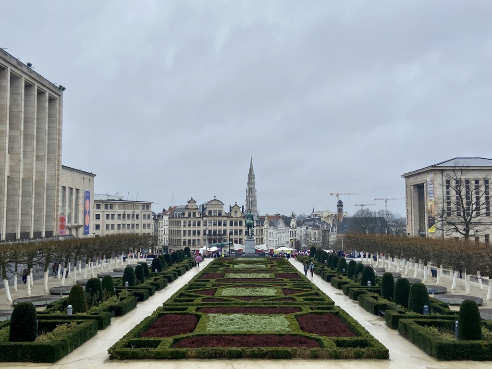

We departed from Miami on Thursday, February 27, 2020 and returned on American soil on Tuesday, March 10. The very next day, the President banned travel from Europe — we got back just in the nick of time and were able to enjoy our incredible vacation while blissfully ignorant of the havoc COVID-19 would soon begin to wreak on the world. During our unforgettable trek, we visited four beautiful cities: Paris, London, Amsterdam and Brussels. These are our most memorable moments from each stop.
I'm Bre. My husband is Leo. Together, we're Breo.
& we were fortunate enough to take a perfectly-timed trip to Europe to celebrate our second wedding anniversary.
Paris
We bookended our trip in Paris and were able to stay with my husband's aunt and uncle, who were living there for a year. We spent a lot of our time in the city's various museums and other "touristy" things, and we ate a LOT of good food and drank a LOT of good wine (a theme for our entire trip, actually!).
Top 5 favorite experiences:
- A lovely and informative (yet not pretentious!) wine tasting class
- Spending time with our aunt and uncle and having them show us around
- Seeing the view from the top of the Arc de Triomphe
- The Catacombs
- So many crêpes!

London
Though the language barrier in Paris wasn't a huge problem, we enjoyed being back in the English-speaking world. We spent our time in London balancing lots of sightseeing and visiting plenty of pubs, and it was so fun to explore the various nooks and crannies of the city. Even though Big Ben was undergoing some maintenance and was surrouned by scaffolding during our trip, we still loved moment of our time here.
Top 5 favorite experiences:
- The Harry Potter tour (back when we were blissfully unaware of the full extent of how TERF-y J.K. Rowling is)
- Seeing the city at sunset from the London Eye
- Camden Market
- The cutest little floating bookstore, which we stumbled upon by accident
- The very best Indian food of our lives. If you find yourself in London, visit Dishoom.

Amsterdam
Though we loved every city we visited, we felt most at home in Amsterdam (though that could) be our focus on more eating/drinking and less on museums). The beautiful canals and amazing architecture was like eye candy, and we couldn't get enough of the ~vibe~ in this city.
Top 5 favorite experiences:
- A beautiful dinner during a canal tour
- Our tour and cocktail class at the House of Bols
- The Heineken tour
- Stroopwafels!!!
- The Anne Frank House

Brussels
Our time in Brussels was short and sweet: just a one-day stop on our way from Amsterdam back to Paris to catch our flight home. The city made a huge impression on us though, and we can't wait to go back! We made the most of our time with a chocolate and wine tour that lasted a good portion of our only full day, and we fell in love with Brussels.
Top 5 favorite experiences:
- Belgian fries and waffles (we barely ate anything else!)
- Tasting incredible chocolate, including 100% cocoa
- Meeting a cat in one of the Royal Theatre Toone
- Making friends with our fun and informative tour guide
- Strolling and shopping in the city center
